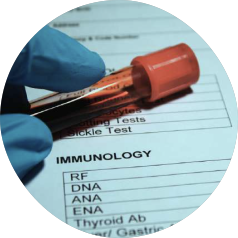
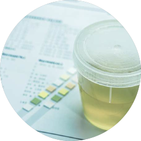
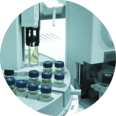
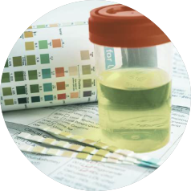
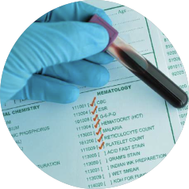
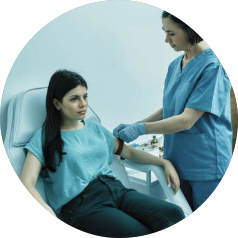

BACTERIOLOGÍA
La bacteriología es el estudio de bacterias presentes en muestras clínicas para detectar infecciones y determinar el tratamiento adecuado. Es fundamental en el diagnóstico preciso de enfermedades infecciosas.

INMUNOLOGÍA
El examen de inmunología analiza la respuesta del sistema inmunológico para detectar infecciones,alergias o enfermedades autoinmunes. Evalúa la presencia de anticuerpos, antígenos u otros marcadores específicos en la sangre.

TOXICOLOGÍA
El examen de toxicología detecta la presencia de drogas, alcohol u otras sustancias tóxicas en el organismo. Se realiza comúnmente en orina o sangre y es útil para control laboral, clínico o legal.

CROMATOGRAFÍA DE GASES
La cromatografía de gases es una técnica analítica que permite identificar y cuantificar compuestos químicos en una muestra. Se utiliza para detectar sustancias tóxicas, contaminantes o residuos de medicamentos en sangre, orina o aire.
PARASITOLOGÍA
El examen de parasitología detecta la presencia de parásitos en muestras como heces, sangre o tejidos. Es clave para diagnosticar infecciones intestinales o sistémicas y orientar el tratamiento adecuado.

UROANÁLISIS
El uroanálisis es un estudio de orina que permite evaluar el estado general de salud y detectar infecciones urinarias, problemas renales, diabetes u otras alteraciones metabólicas. Es rápido, no invasivo y de gran utilidad diagnóstica.

HEMATOLOGÍA
El examen de hematología analiza los componentes de la sangre, como glóbulos rojos, glóbulos blancos y plaquetas. Ayuda a detectar anemias, infecciones, trastornos de coagulación y otras enfermedades hematológicas.

QUÍMICA SANGUÍNEA
El examen de química sanguínea evalúa distintos parámetros en la sangre como glucosa, colesterol, triglicéridos, urea y creatinina. Permite detectar alteraciones metabólicas, renales, hepáticas y el estado general de salud.